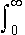

|
References
1. Fermi-Dirac Integral
Sommerfeld's definition
Fn(h)
= xn
/ [1 + e (x-h)]dx
Dingle's definition [4]:
Fn(h)
= [1/G(n+1)] xn
/ [ 1 + e(x- h)]dx
2. The Fermi-Dirac Integral value in this
applet has an error less than + 0.4% [3] over all ranges
of h, calculated using
the expression by Bednarczyk and Bednarczyk in
A.C.Bednarczyk and J.Bednarczyk, Phys. Lett. 64A, 409
(1978).
3. J.S.Blakemore, Solid-State Electron.
25, No.11, 1067-1076, 1982.
4. R.B.Dingle, Appl. Phys. res. B.6, 225
(1957).
|